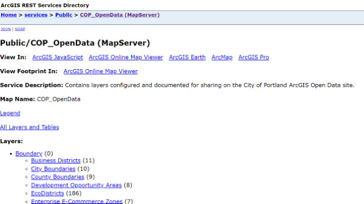
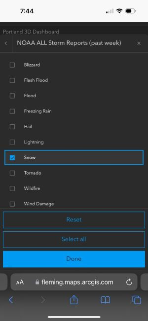
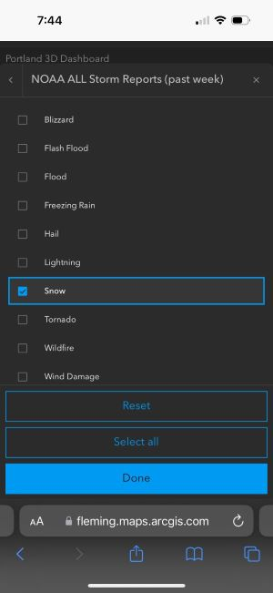
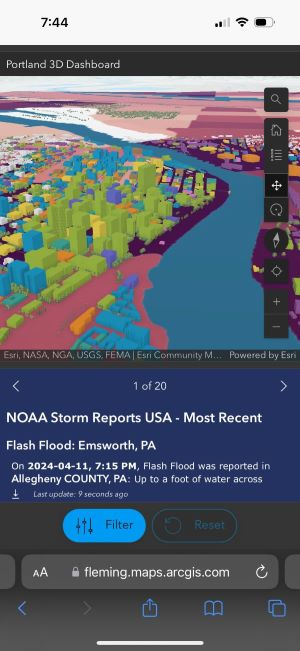
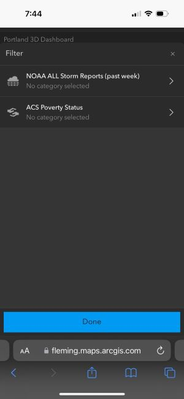

Process
Please note: these links may be unusable in the future due to licensing expirations.
Step 1. I selected data from ArcGIS Online to use in a Scene.
Step 2. I added the layers into ArcGIS Online Scene Viewer, enabled the legend so it would transfer to the options on the Dashboard configuration page, and published it here
Step 3. Under "New App" in my Content, I selected "Dashboards" and began working with the different configurations available.
 

Step 5. In "Mobile" view, I selected "Drawer" to browse through and add one the matching live update data for NOAA USA Storm Reports. The window at the bottom will now show the most recent storm reports.
Step 6. I also added an ACS Poverty Status Boundaries layer in order to see differences at the city level. I made a similar filter option to only see the level for whatever counties are selected.
Step 7. Once I made a "splash screen" that shows up when you first open the Dashboard, and made the same filter options in the "desktop" view, I published the Dashboard to ArcGIS Online.

My phone crashed a few times, so it's very important to keep the amount of layers and configurations to a minimum for mobile use.
The hardest part was finding compatible data. It took a while before I was able to find decent 3D data that was compatible with Scene Viewer. I didn't get to try out the gauge and other configurations because the data I could find didn't work with it.
Overall, Dashboard is a great way to interact with a map on your mobile device that requires additional data to understand and use it effectively, but it is just Scene Viewer with add-ons that may cause your phone to crash if you're not careful with the amount of data there. So for maitenance workers in the field, this may be useful, but Scene Viewer works well on a mobile device alone if you need to manipulate a 3D map.
What worked:
ArcGIS Dashboard is a great mobile option for displaying 3D data, as long as you keep the layers and amount of data to a minimum. It is visually appealing and usually loads fast on both desktop and mobile devices.